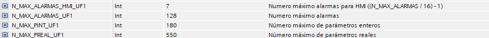
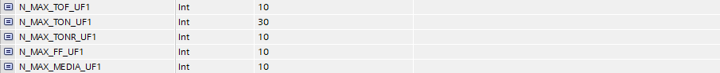
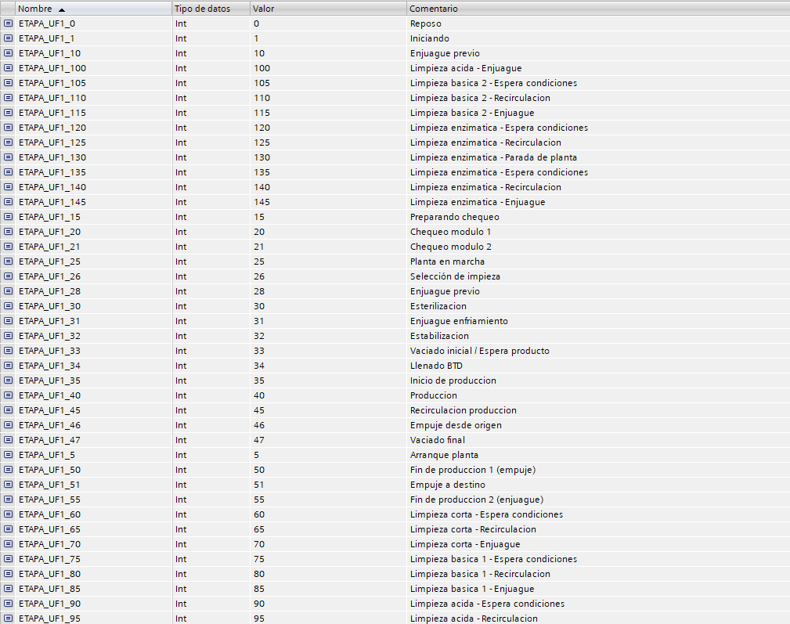

Constantes de proceso
Todos los procesos contaran con una tabla de variables para declarar constantes de usuario, para su uso en el programa.
El nombre seguirá las convenciones de codificación y nomenclatura.
Las constantes obligatorias serán las siguientes:

Se declararán también números máximos para los dispositivos temporizadores, flip flop y medias que se declaren en el DB principal del proceso.

Se declararán todas las etapas que contenga el proceso.
